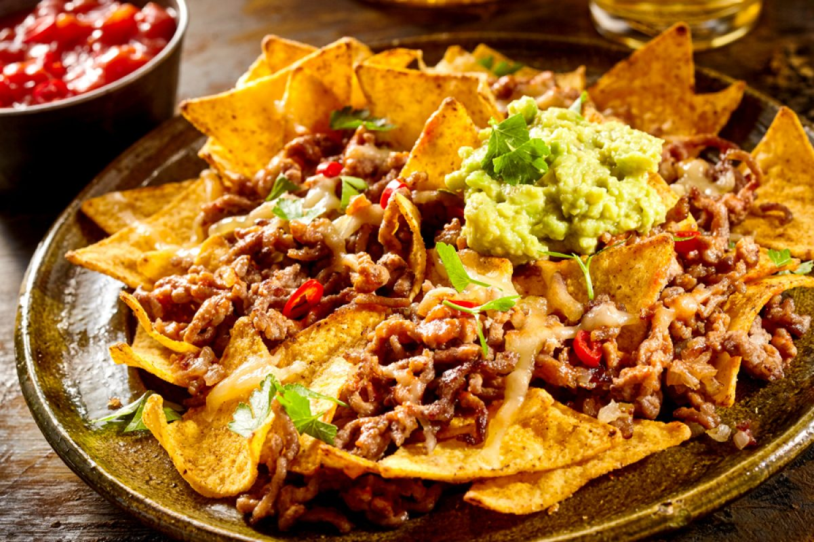

Nachos

Description
Nachos have it all: protein, carbs, veggies, and—the most important thing—cheese!
They’re also fully customizable to suit a solo diner or a group gathered for chow.
Ingredients
- 2 tablespoons chili powder
- 1 1/2 teaspoons kosher salt
- 1 teaspoon granulated garlic
- 1 teaspoon granulated onion
- 1 teaspoon ground cumin
- 1/2 teaspoon dried oregano
- 1/4 teaspoon black pepper
- Pinch of cayenne pepper (optional)
Steps
- Preheat the oven to 350°F.
- Make the taco spice blend
- Make the beef and bean topping
- Toast the chips
- Assemble and bake the nachos
- Top and serve
Back